Deterministic¶
Cauchy¶
An  matrix
matrix  is called Cauchy if there exist
vectors
is called Cauchy if there exist
vectors  and
and  such that
such that
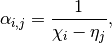
where 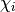 is the  ‘th entry of and 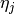
is the
‘th entry of and 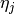
is the  ‘th entry of .
‘th entry of .
- void Cauchy(const std::vector<F>& x, const std::vector<F>& y, Matrix<F>& A)¶
Generate a serial Cauchy matrix using the defining vectors,
and (templated over the datatype, F, which must be a field).
- void Cauchy(const std::vector<F>& x, const std::vector<F>& y, DistMatrix<F, U, V>& A)¶
Generate a distributed Cauchy matrix using the defining vectors,
and (templated over the datatype, F, which must be a field, as well as the distribution scheme of A, (U,V)).
Cauchy-like¶
An matrix is called Cauchy-like if there exist
vectors 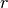,  , , and such that
, , and such that
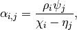
where 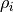 is the ‘th entry of , 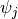 is the ‘th
entry of , is the ‘th entry of , and
is the ‘th entry of .
- void CauchyLike(const std::vector<F>& r, const std::vector<F>& s, const std::vector<F>& x, const std::vector<F>& y, Matrix<F>& A)¶
Generate a serial Cauchy-like matrix using the defining vectors: ,
, , and (templated over the datatype, F, which must be a field).
- void CauchyLike(const std::vector<F>& r, const std::vector<F>& s, const std::vector<F>& x, const std::vector<F>& y, DistMatrix<F, U, V>& A)¶
Generate a distributed Cauchy-like matrix using the defining vectors: ,
, , and (templated over the datatype, F, which must be a field, as well as the distribution scheme of A, (U,V)).
Circulant¶
An 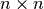 matrix is called circulant if there exists a vector  such that
such that
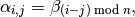
where 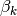 is the 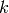‘th entry of vector .
- void Circulant(const std::vector<T>& a, Matrix<T>& A)¶
Generate a serial circulant matrix (templated over the datatype, T).
- void Circulant(const std::vector<T>& a, DistMatrix<T, U, V>& A)¶
Generate a distributed circulant matrix (templated over the datatype, T, and distribution scheme of A, (U,V)).
Diagonal¶
An matrix is called diagonal if each entry  , where
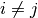, is
, where
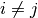, is  . They are therefore defined by the diagonal values, where
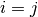.
. They are therefore defined by the diagonal values, where
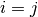.
- void Diagonal(const std::vector<T>& d, Matrix<T>& D)¶
Construct a serial diagonal matrix from the vector of diagonal values,
 (templated over the datatype, T).
(templated over the datatype, T).
- void Diagonal(const std::vector<T>& d, DistMatrix<T, U, V>& D)¶
Construct a distributed diagonal matrix from the vector of diagonal values,
(templated over the datatype, T, and the distribution scheme, (U,V)).
DiscreteFourier¶
The Discrete Fourier Transform (DFT) matrix, say , is given by
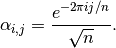
- void DiscreteFourier(int n, Matrix<Complex<R>>& A)¶
Set the sequential matrix A equal to the DFT matrix (templated over the real datatype, R).
- void DiscreteFourier(int n, DistMatrix<Complex<R>, U, V>& A)¶
Set the distributed matrix A equal to the DFT matrix (templated over the real datatype, R, and distribution scheme of A, (U,V)).
- void MakeDiscreteFourier(Matrix<Complex<R>>& A)¶
Turn the existing serial matrix A into a discrete Fourier matrix (templated over the real datatype, R).
- void MakeDiscreteFourier(DistMatrix<Complex<R>, U, V>& A)¶
Turn the existing serial matrix A into a discrete Fourier matrix (templated over the real datatype, R, and distribution scheme, (U,V)).
Hankel¶
An matrix is called a Hankel matrix if there
exists a vector such that
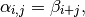
where 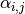 is the entry of and
is the ‘th entry of the vector .
- void Hankel(int m, int n, const std::vector<T>& b, Matrix<T>& A)¶
Create an
Hankel matrix from the generate vector, (templated over the datatype, T).
- void Hankel(int m, int n, const std::vector<T>& b, DistMatrix<T, U, V>& A)¶
Create an
Hankel matrix from the generate vector, (templated over the datatype, T, and distribution scheme, (U,V)).
Hilbert¶
The Hilbert matrix of order  is the matrix where
entry is equal to 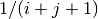.
is the matrix where
entry is equal to 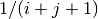.
- void Hilbert(int n, Matrix<F>& A)¶
Generate the Hilbert matrix A (templated over the datatype, F, which must be a field).
- void Hilbert(int n, DistMatrix<F, U, V>& A)¶
Generate the Hilbert matrix A (templated over the datatype, F, which must be a field, and distribution scheme, (U,V)).
- void MakeHilbert(Matrix<F>& A)¶
Turn the square serial matrix A into a Hilbert matrix (templated over the datatype, F, which must be a field).
- void MakeHilbert(DistMatrix<F, U, V>& A)¶
Turn the square distributed matrix A into a Hilbert matrix (templated over the datatype, F, which must be a field, and distribution scheme, (U,V)).
Identity¶
The identity matrix is simply defined by setting entry
to one if , and zero otherwise. For various
reasons, we generalize this definition to nonsquare, ,
matrices.
- void Identity(int m, int n, Matrix<T>& A)¶
Set the serial matrix A equal to the
identity(-like) matrix (templated over the datatype, T).
- void Identity(int m, int n, DistMatrix<T, U, V>& A)¶
Set the distributed matrix A equal to the
identity(-like) matrix (templated over the datatype, T, and distribution scheme, (U,V)).
- void MakeIdentity(Matrix<T>& A)¶
Set the serial matrix A to be identity-like (templated over datatype, T).
- void MakeIdentity(DistMatrix<T, U, V>& A)¶
Set the distributed matrix A to be identity-like (templated over datatype, T, and distribution scheme, (U,V)).
Ones¶
Create an matrix of all ones.
- void Ones(int m, int n, Matrix<T>& A)¶
Set the serial matrix A to be an
matrix of all ones (templated over datatype, T).
- void Ones(int m, int n, DistMatrix<T, U, V>& A)¶
Set the distributed matrix A to be an
matrix of all ones (templated over datatype, T, and distribution scheme, (U,V)).
Change all entries of the matrix to one.
- void MakeOnes(Matrix<T>& A)¶
Change the entries of the serial matrix to ones (templated over datatype, T).
- void MakeOnes(DistMatrix<T, U, V>& A)¶
Change the entries of the distributed matrix to ones (templated over datatype, T, and distribution scheme, (U,V)).
OneTwoOne¶
A “1-2-1” matrix is tridiagonal with a diagonal of all twos and sub- and super-diagonals of all ones.
- void OneTwoOne(int n, Matrix<T>& A)¶
Set A to a serial “1-2-1” matrix (templated over the datatype, T).
- void OneTwoOne(int n, DistMatrix<T, U, V>& A)¶
Set A to a distributed “1-2-1” matrix (templated over the datatype, T, and distribution scheme, (U,V)).
- void MakeOneTwoOne(Matrix<T>& A)¶
Modify the entries of the square serial matrix A to be “1-2-1” (templated over the datatype, T).
- void MakeOneTwoOne(DistMatrix<T, U, V>& A)¶
Modify the entries of the square distributed matrix A to be “1-2-1” (templated over the datatype, T, and the distribution scheme, (U,V)).
Toeplitz¶
An matrix is Toeplitz if there exists a vector such that, for each entry of ,
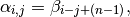
where is the ‘th entry of .
- void Toeplitz(int m, int n, const std::vector<T>& b, Matrix<T>& A)¶
Build the serial matrix A using the generating vector
(templated over the datatype, T).
- void Toeplitz(int m, int n, const std::vector<T>& b, DistMatrix<T, U, V>& A)¶
Build the distributed matrix A using the generating vector
(templated over the datatype, T, and distribution scheme, (U,V)).
- void MakeToeplitz(const std::vector<T>& b, Matrix<T>& A)¶
Turn the serial matrix A into a Toeplitz matrix using the generating vector
(templated over the datatype, T).
- void MakeToeplitz(const std::vector<T>& b, DistMatrix<T, U, V>& A)¶
Turn the distributed matrix A into a Toeplitz matrix defined from the generating vector
(templated over the datatype, T, and distribution scheme, (U,V)).
Walsh¶
The Walsh matrix of order is a 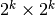 matrix, where
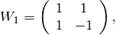
and
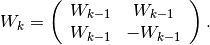
A binary Walsh matrix changes the bottom-right entry of 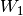 from
 to .
to .
- void Walsh(int k, Matrix<T>& W, bool binary=false )¶
Set the serial matrix
 equal to the ‘th (possibly binary) Walsh matrix (templated over the datatype, T).
equal to the ‘th (possibly binary) Walsh matrix (templated over the datatype, T).
- void Walsh(int k, DistMatrix<T, U, V>& W, bool binary=false )¶
Set the distributed matrix
equal to the ‘th (possibly binary) Walsh matrix (templated over the datatype, T, and distribution scheme, (U,V)).
Wilkinson¶
A Wilkinson matrix of order is a tridiagonal matrix with diagonal
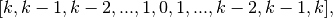
and sub- and super-diagonals of all ones.
- void Wilkinson(int k, Matrix<T>& W)¶
Set the serial matrix
equal to the ‘th Wilkinson matrix (templated over the datatype, T).
- void Wilkinson(int k, DistMatrix<T, U, V>& W)¶
Set the distributed matrix
equal to the ‘th Wilkinson matrix (templated over the datatype, T, and distribution scheme, (U,V)).
Zeros¶
Create an matrix of all zeros.
- void Zeros(int m, int n, Matrix<T>& A)¶
Set the serial matrix A to be an
matrix of all zeros (templated over datatype, T).
- void Zeros(int m, int n, DistMatrix<T, U, V>& A)¶
Set the distributed matrix A to be an
matrix of all zeros (templated over datatype, T, and distribution scheme, (U,V)).
Change all entries of the matrix to zero.
- void MakeZeros(Matrix<T>& A)¶
Change the entries of the serial matrix to zero (templated over datatype, T).
- void MakeZeros(DistMatrix<T, U, V>& A)¶
Change the entries of the distributed matrix to zero (templated over datatype, T, and distribution scheme, (U,V)).